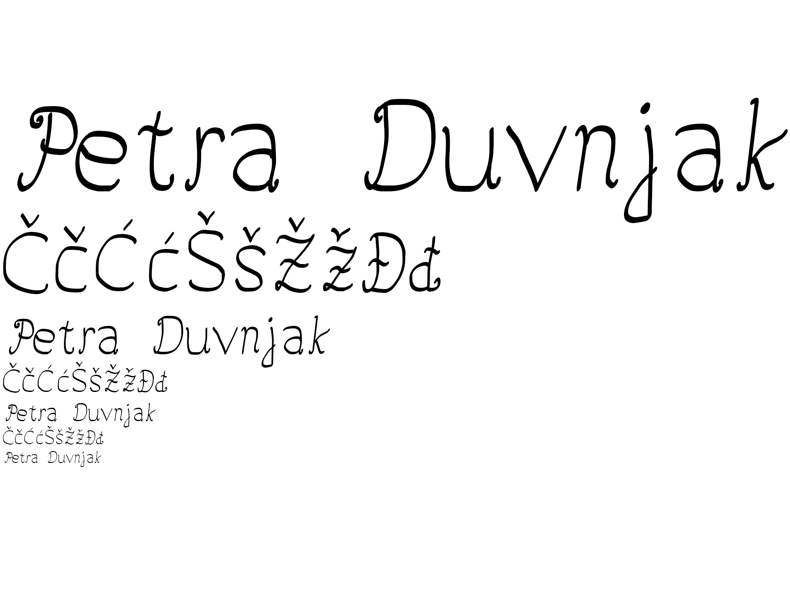
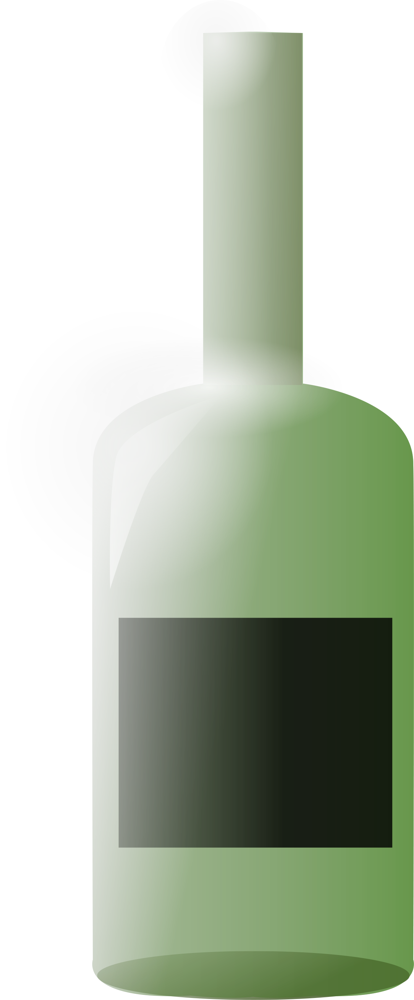
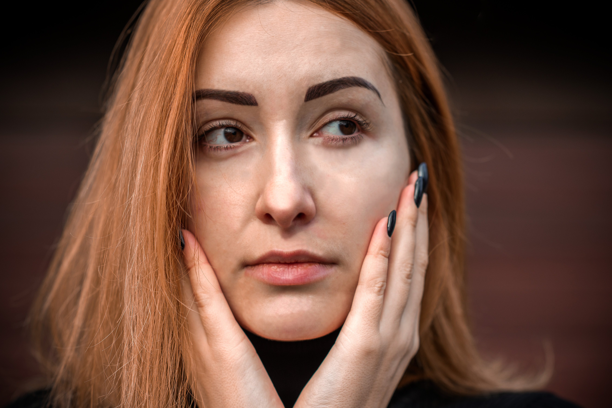
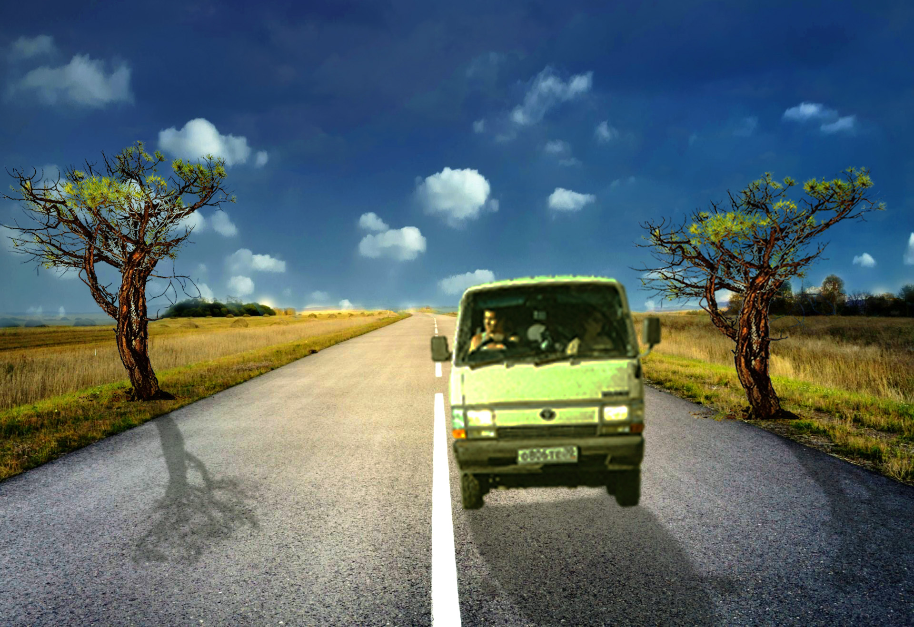

Moje vježbe 📚
Vježba 1: Font
U ovoj vježbi smo napravili costum font kojim smo napisali ime i prezime te slova s kvačicama.
Vježba 2: Maska
U ovoj vježbi smo napravili masku na slova sa linijama.

Vježba 3: Ilustracija
U ovoj vježbi smo napravili cvijet pomoću kružnog ponavljanja elemenata.

Vježba 4: Realistična Ilustracija
U ovoj vježbi smo napravili ilustraciju boce za vino sa odsjajima za dojam trodimenzionalnosti.
Projektni zadatak 1: Ilustracija
U ovom projektnom zadatku smo iskoristili sva znaanja iz prethodnih vježbi i napravili smo jednu koherentu ilustraciju po vlastitiom izboru.

Vježba 6: Manipulacija Boja u Photoshop-u
U ovoj vježbi smo koristili alate za promjenu i manipuliranje boja unutar programa za uređivanje fotografija.

Vježba 7: Retušrianje fotgrafije
U ovoj vježbi smo se bavili alatima za retuširanje fotografija. Uklonili smo nepravilnosti s kože i uljepšali izgled djevojke na fotografiji.
Vježba 8: Photoshop
U ovoj vježbi smoiskoristili sve elemente uređivanja fotografija unutar odabranog programa za uređivanje fotografija. Dodavanjem elemenata i manipulacijom boja dobili smo realističnu finalnu fotografiju.
Vježba 9: Gif
U ovoj vježbi smo napravili giff pomoću alata za uređivanje videa i fotografija.

Vježba 10: Video
U ovoj vježbi smo napravili video pomoću snimke i elemenata koji su originalno odvojeni dokumenti. Spojili smo ih u koherentnu cjelinu, koristeći jednostavne tranzicije i manipulaciju tekstualnih elemenata.